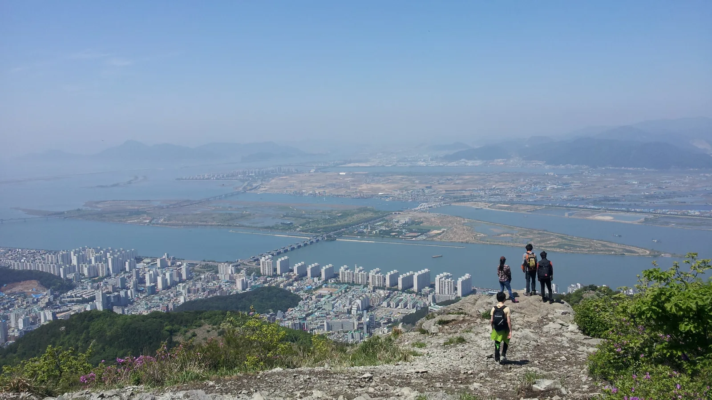
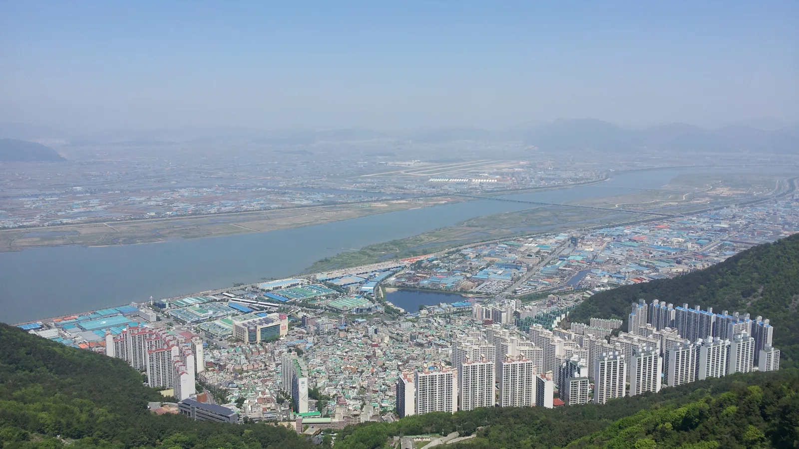
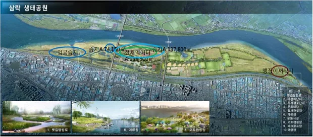

▲ 낙동강 좌안을 따라 7km에 걸쳐 조성된 삼락생태공원 항공사진. 코스모스와 핑크뮬리 단지는 관리도로변과 철새먹이터 구역에 함께 조성돼 있다
부산 사상구 삼락동·엄궁동 일원에 걸쳐 있는 삼락생태공원은 낙동강 4대 강변공원(삼락·대저·화명·맥도) 중 가장 규모가 크다. 낙동강 좌안을 따라 약 7km, 면적 4.72㎢에 달하는 이 공원은 원래 철새 먹이터로 조성됐지만, 계절마다 다른 꽃이 피어나면서 부산 시민의 대표 가을 나들이 명소로 자리 잡았다. 가을이면 코스모스와 핑크뮬리가 차례로, 때로는 동시에 만개해 낙동강 물길과 어우러진 풍경을 만든다.
1. 코스모스 단지 — 철새먹이터에 피어난 가을꽃
삼락생태공원의 코스모스 단지는 관리도로변과 철새먹이터 일대 약 26만 2천㎡(262,000㎡) 규모로 조성돼 있다. 원래 겨울 철새가 도래하기 전까지 방문객에게 볼거리를 제공하는 용도로 코스모스 씨앗을 뿌린 것인데, 꽃이 지고 나면 보리를 심어 겨울 철새의 먹이터로 다시 전환하는 자연순환형 조성 방식이 특징이다. 코스모스는 보통 9월 중순부터 피기 시작해 10월 중순까지 절정을 이룬다.
2. 핑크뮬리 — 2017년부터 매년 가을 물드는 분홍빛 들판
부산 낙동강관리본부는 2017년부터 삼락생태공원을 비롯해 대저생태공원 2번 주차장 일원, 을숙도철새공원 피크닉광장 등지에 약 8,000㎡ 규모로 핑크뮬리를 조성해왔다. 억새와 비슷하게 생겼지만 가을이면 분홍빛으로 물드는 벼과 식물로, 9월 중순부터 색이 오르기 시작해 10월 말까지 분홍빛을 유지한다. 코스모스보다 개화 기간이 다소 길어, 코스모스가 저물어갈 무렵에도 핑크뮬리는 절정을 이루는 경우가 많다.
| 구분 | 개화 시작 | 절정 | 비고 |
|---|---|---|---|
| 코스모스 | 9월 중순 | 10월 중순까지 | 철새먹이터 구역, 이후 보리 파종 |
| 핑크뮬리 | 9월 중순 | 10월 말까지 | 관리도로변·철새먹이터 등지, 2017년부터 조성 |
3. 낙동강 하구 생태 벨트 — 삼락에서 을숙도까지

▲ 낙동강 하구 전경. 삼락생태공원을 포함한 4대 강변공원과 을숙도, 대저생태공원이 낙동강을 따라 이어진 생태 벨트를 이루고 있다 ⓒ Wikimedia Commons
삼락생태공원은 낙동강 하구를 따라 이어지는 더 큰 생태 벨트의 일부다. 상류 쪽으로는 대저생태공원과 화명생태공원이, 하류 쪽으로는 철새 도래지로 유명한 을숙도철새공원이 자리한다. 삼락생태공원 한 곳만 둘러봐도 반나절이 훌쩍 걸리는 규모지만, 시간 여유가 있다면 자전거를 빌려 낙동강 자전거길을 따라 다른 생태공원까지 이동하는 코스도 가능하다.

▲ 삼락생태공원이 자리한 사상구 엄궁동 일대에서 바라본 낙동강 전경. 강 건너로 김해공항 활주로가 보인다 ⓒ Wikimedia Commons
4. 이용정보 — 주차·자전거·편의시설

▲ 삼락생태공원 구역 안내. 엄궁습지, 철새먹이터(코스모스 단지), 연꽃단지, 맹꽁이서식지 등으로 나뉘어 있다 부산광역시 낙동강관리본부
공원 내에는 파크골프장, 인라인스케이트장, 축구장, 테니스장 등 체육시설과 다수의 무료 주차장이 분산 배치돼 있다. 규모가 워낙 커서 도보로 전체를 돌아보기는 쉽지 않으므로, 자전거 대여소를 이용하거나 목적지(코스모스 단지·핑크뮬리 구역)에 가까운 주차장을 미리 확인하고 방문하는 편이 효율적이다. 화장실과 매점 등 편의시설은 주요 진입로 인근에 갖춰져 있다.
5. 삼락생태공원 가을꽃 여행, 가기 전 체크리스트
✅ 삼락생태공원 가을꽃 여행, 가기 전 체크리스트
· 부산 사상구 낙동강 좌안, 면적 4.72㎢, 낙동강 4대 강변공원 중 최대 규모
· 코스모스 단지는 철새먹이터 구역(약 26만 2천㎡), 9월 중순~10월 중순 절정
· 핑크뮬리는 2017년부터 조성, 관리도로변·철새먹이터 등지 약 8,000㎡, 10월 말까지 절정 유지
· 상류 대저·화명생태공원, 하류 을숙도철새공원과 낙동강 생태 벨트로 연결
· 공원이 넓어 자전거 대여 또는 목적 구역 인근 주차장 이용 추천
· 파크골프장·인라인스케이트장 등 체육시설과 무료 주차장 다수 분산 배치